2.3.1.3 Editing a Class/Lesson
CSTutor shows the Edit Lesson screen in two ways
1. The instructor has just created a new class or lesson and is taken this screen to fill in the main page. The initial screen in this case would be blank(For more information, see "Creating new Classes/Lessons").
2. A user with edit permissions is browsing his or her lessons and classes and clicked on the "Edit" button. The screen is populated with the data for that lesson and is editable by the user.
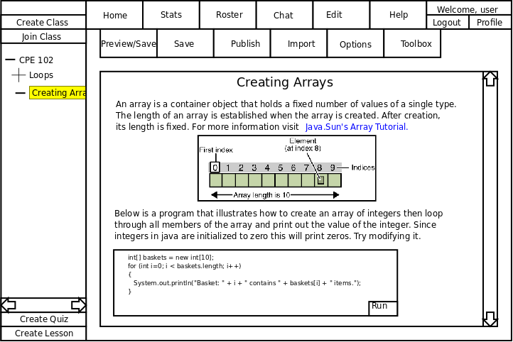
Figure 2.3.1.3-1
To edit an existing lesson, the instructor browses lessons in the navigation bar.
Notice the selected lesson is highlighted.
The data shows up as though the instructor is following the lessons.
Once he or she finds the lesson, they first click on the topic to view it,
then click on Edit to begin editing.
Preview/Save button:
Clicking the Preview/Save button saves the current edits. CSTutor then
displays a screen that shows the lesson how student would view it.
This action does NOT make the changes visible to the students in the class.
Please see the Preview Page for details
Save button:
Clicking the Save button save the current edits only. A save conformation
appears if save is completed.
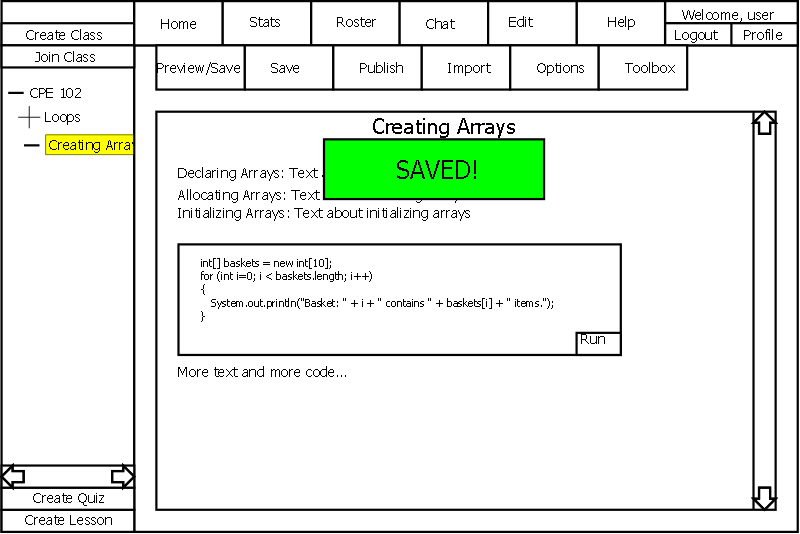
Figure 2.3.1.3-2
Publish button:
Clicking the Publish button save the current edits and publishes them to the
class. Students are able to view the changes after the lesson is
published.

Figure 2.3.1.3-3
Import button:
Clicking the Import button imports data into the lesson. Files that
can be imported are: jpeg, gif, png, html, txt, java, c, cpp
Once the button is pressed, a file browser opens to select a file.
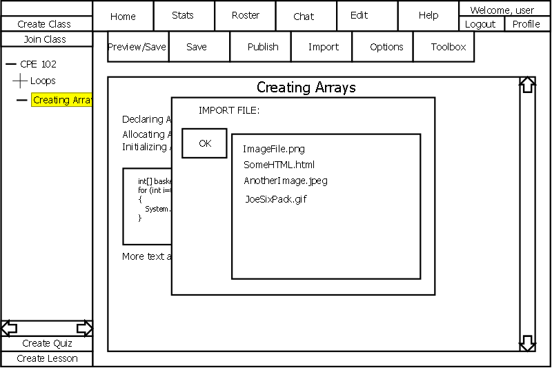
Figure 2.3.1.3-4
Options button:
Clicking the Options button pushes a dropdown list of options onto the screen.
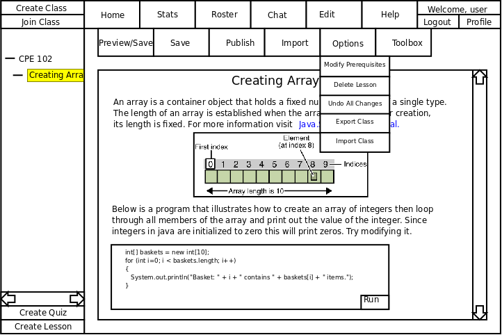
Figure 2.3.1.3-5
Modify Prerequisites: Clicking this button allows the instructor to pick from a list of previous
quizzes. Selecting an item means that the Student cannot view the page without first completing
the selected quiz with the indicated score. When selecting a quiz the Instructor may select a minimum score
required. See Figure 2.3.1.3-6 below.
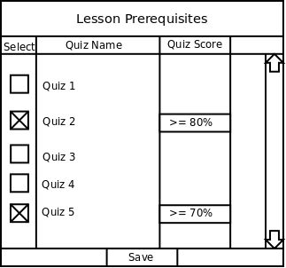
Figure 2.3.1.3-6
Delete Lesson: Deletes the current lesson and returns the Instructor to a nearby lesson or
home page if there are none.
Undo All Changes: This removes all changes from the working copy by copying the currently
published version of the lesson into the working copy.
Export Class: This button prompts the user for a save location then packages the class into an
encrypted format and saves into the previous location with the title of the class as its name.
Import Class: This button prompts the user for a location then unpackages the saved class
and loads it into CSTutor.
Toolbox button:
Clicking the Toolbox button places a toolbox onto the screen.
It can be removed by clicking Toolbox button again.
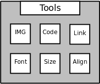
Figure 2.3.1.3-7
A walkthrough exists below which illustrates how to use the tools to create the lesson seen on this page.
After creating the lesson, CSTutor presents the user with a blank window. Clicking inside this window
allows the user to see a cursor and type text into the window. First the user types the title of the lesson
"Creating Arrays". Next the user decides to change the font of the title. To do this the user highlights the
title then clicks the Font button.
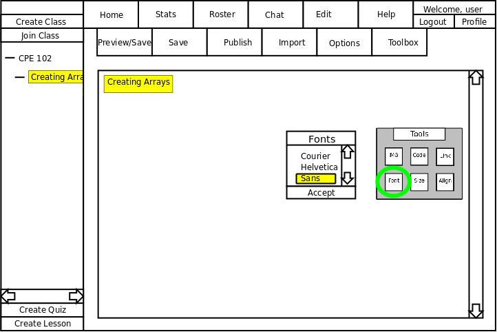
Figure 2.3.1.3-8
The Font tool presents the user with a list of available fonts. The user may scroll down to see more fonts.
While highlighting text, the Font tool instantly updates the highlighted text.
Clicking accept closes the font window.
Now the Instructor wishes to center the title of the page. To do this the Instructor highlights the title then
clicks the Align button which spawns an alignment dialogue.
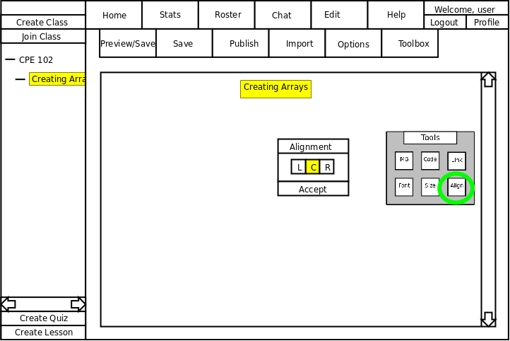
Figure 2.3.1.3-9
The Align tool contains options for (L,C,R) left, center, and right justification. The tool highlights the current
alignment in yellow. Clicking any alignment instantly updates the highlighted text. Accept closes the tool
window. Note: this tool aligns text, code boxes, and images.
To finalize the title the Instructor makes the text larger by clicking the Size button.
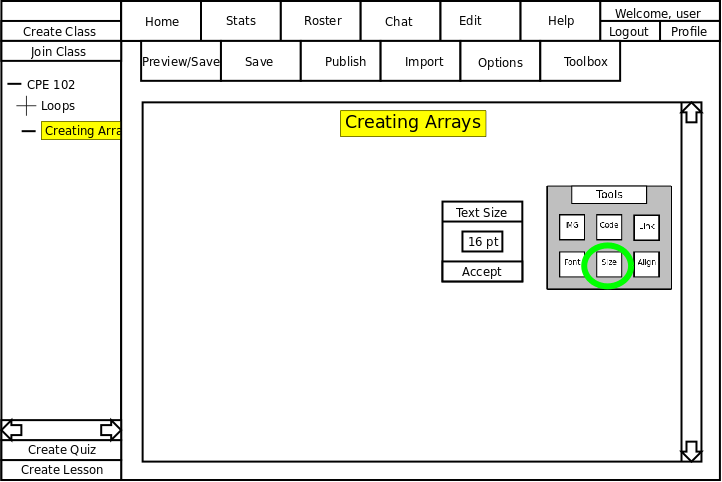
Figure 2.3.1.3-10
This button prompts the user for text size. The user clicks inside the box and simply types in the desired
text size. The text instantly changes size as the user modifies the size field. Clicking accept closes the
Size tool.
The Instructor types more text but then decides to put in a link at the end of the paragraph to the java
sun array tutorial. To do this the Instructor clicks the Link button which brings up the Link tool.
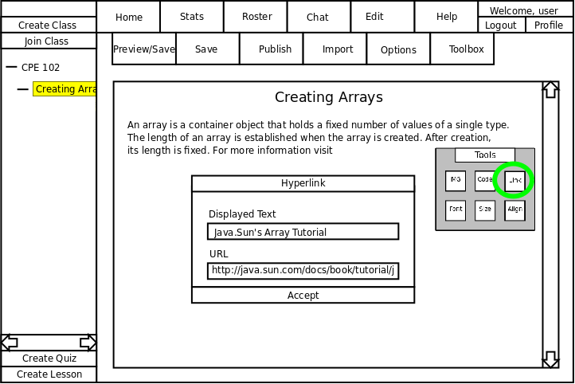
Figure 2.3.1.3-11
The Link tool prompts the user for text to display to the user as well as the underlying URL of the link.
Clicking accept closes the Link tool and inserts the hyperlink into into the lesson at the user's cursor.
Now the Instructor wants to put in a picture to help illustrate arrays. To do this the Instructor clicks the
IMG button.
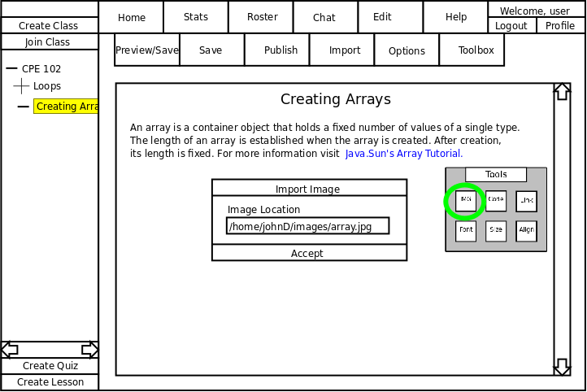
Figure 2.3.1.3-12
The Image tool prompts the user for the image location. Clicking accept places the picture into the lesson
on its own line at the user's cursor then closes the Image tool.
NOTE:If the Instructor wishes to center the picture he must click on the picture to select it, then use
the Align button.
The Instructor finishes off the lesson by adding in a code box by clicking the Code button.

Figure 2.3.1.3-13
The Code button inserts an empty code box much like an image (on its own line at the user's cursor).
In order to fill in the code box the Instructor must click inside the code box and simply begin typing.
From here the Instructor may view the lesson from the Student's perspective by clicking Preview/Save
or simply save his work by clicking Save. Once satisfied the Instructor can allow Students access to
the page by clicking the Publish button.
Prev: creating lessons
| Next: deleting a lesson
| Up: lesson manager
| Top: index